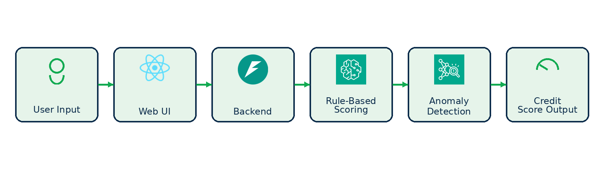

Welcome
This enablement workshop demonstrates how to build an AI‑powered credit scoring application. The system collects credit application details in a modern web interface, evaluates the information using rule‑based logic and large language models (LLMs), optionally checks for anomalies with AWS services, and returns a credit score along with actionable insights.
Use the navigation bar to explore different aspects of the project, from a high‑level overview to environment setup instructions and details about the data and models used.
